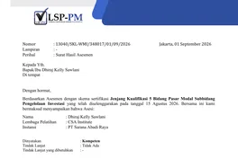

Doktor Trader
Rumah belajar trading dari Dr. Dhiraj Kelly — mulai dari fundamental, manajemen risiko, sampai komunitas trader yang disiplin.
Dari margin call, saya belajar satu hal: yang menyelamatkan akun bukan entry terbaik, tapi risk management yang konsisten. Doktor Trader adalah tempat saya membagikan semua itu secara terstruktur.

Lebih dari akun media sosial.
Rumah digital yang menghubungkan saya dengan kamu secara langsung — tempat belajar yang terstruktur, bukan sekadar konten yang lewat di feed.
Satu platform, dua perjalanan trader.
Pilih tahapmu — konten dan fitur mengikuti kebutuhanmu.
Fitur yang bikin kamu kembali setiap hari.
Nilai tambah untuk trader berpengalaman.
Semua gratis — tanpa biaya langganan. Cukup buka akun trading di Dupoin melalui link resmi Doktor Trader.
Dari followers jadi member aktif.
Membership, event, dan rewards — alasan untuk terus belajar bareng.
Dr. Dhiraj Kelly Sawlani
Margin call survivor yang kini fokus mengajar risk management. Trader XAUUSD, pebisnis, dan akademisi — saya percaya trading yang sehat dimulai dari melindungi modal, bukan mengejar profit.
Di luar trading, saya memimpin PT Sarana Abadi Raya (EPC & general contractor), terlibat di Sarana Law Firm, dan menjabat komisaris di ERA Integrity.
 IZIN PROFESI · OJK
Izin Wakil Manajer Investasi (WMI) — Otoritas Jasa Keuangan
No. KEP-570/PM.112/WMI/TTE/2026 · 27 Oktober 2026 · berlaku s.d. 31 Mei 2029 · Lihat SK ↗
SERTIFIKAT KOMPETENSI · BNSP
Jenjang Kualifikasi 5 Pasar Modal — Pengelolaan Investasi, LSP Pasar Modal
No. 66301 2412 5 0028048 2026 · 28 Agustus 2026 · berlaku 3 tahun · Lihat sertifikat ↗
IZIN PROFESI · OJK
Izin Wakil Manajer Investasi (WMI) — Otoritas Jasa Keuangan
No. KEP-570/PM.112/WMI/TTE/2026 · 27 Oktober 2026 · berlaku s.d. 31 Mei 2029 · Lihat SK ↗
SERTIFIKAT KOMPETENSI · BNSP
Jenjang Kualifikasi 5 Pasar Modal — Pengelolaan Investasi, LSP Pasar Modal
No. 66301 2412 5 0028048 2026 · 28 Agustus 2026 · berlaku 3 tahun · Lihat sertifikat ↗
 SERTIFIKAT KOMPETENSI · BNSP
Certified Technical Analyst (CTA) — Analisis Teknikal, LSP Pasar Modal
No. 66123 2413 0027687 2026 · 11 Agustus 2026 · berlaku 3 tahun · Lihat sertifikat ↗
SERTIFIKAT KOMPETENSI · BNSP
Certified Technical Analyst (CTA) — Analisis Teknikal, LSP Pasar Modal
No. 66123 2413 0027687 2026 · 11 Agustus 2026 · berlaku 3 tahun · Lihat sertifikat ↗
 SERTIFIKAT KOMPETENSI · BNSP
Wakil Penasihat Berjangka — Perdagangan Berjangka Komoditi
No. 66173 1120 6 0001519 2025 · No. Reg. WPA.002.00073 2025 · LSP PBK · 30 Sep 2025, berlaku 3 tahun · Lihat sertifikat ↗
SERTIFIKAT KOMPETENSI · BNSP
Wakil Penasihat Berjangka — Perdagangan Berjangka Komoditi
No. 66173 1120 6 0001519 2025 · No. Reg. WPA.002.00073 2025 · LSP PBK · 30 Sep 2025, berlaku 3 tahun · Lihat sertifikat ↗
 SERTIFIKAT PELATIHAN
Futures Trading Simulation — Jakarta Futures Exchange (JFX)
No. S/JFX/09-25/233 · 2 September 2025 · Lihat sertifikat ↗
SERTIFIKAT PELATIHAN
Futures Trading Simulation — Jakarta Futures Exchange (JFX)
No. S/JFX/09-25/233 · 2 September 2025 · Lihat sertifikat ↗

HASIL ASESMEN · KOMPETEN Jenjang Kualifikasi 5 Pasar Modal — Pengelolaan Investasi (WMI), LSP Pasar Modal No. 13040/SKL-WMI/348017/01/09/2026 · 1 September 2026 · Lihat surat ↗Akses penuh Doktor Trader, tanpa biaya.
Academy, Tanya Doktor, Analisa Doktor, EA, AI Signals, Copy Trade, Gold Membership, dan Event tanpa biaya langganan. Syaratnya satu: buka dan verifikasi akun trading di Dupoin lewat link resmi di bawah.
Pengungkapan: Doktor Trader adalah mitra referral Dupoin dan dapat menerima komisi atas akun yang dibuka lewat link ini, tanpa biaya tambahan untuk Anda. PT Dupoin Futures Indonesia: Izin Bappebti No. 423/BAPPEBTI/SI/VII/2004 · Anggota JFX No. SPAB-064/BBJ/04/04. Trading berisiko tinggi.